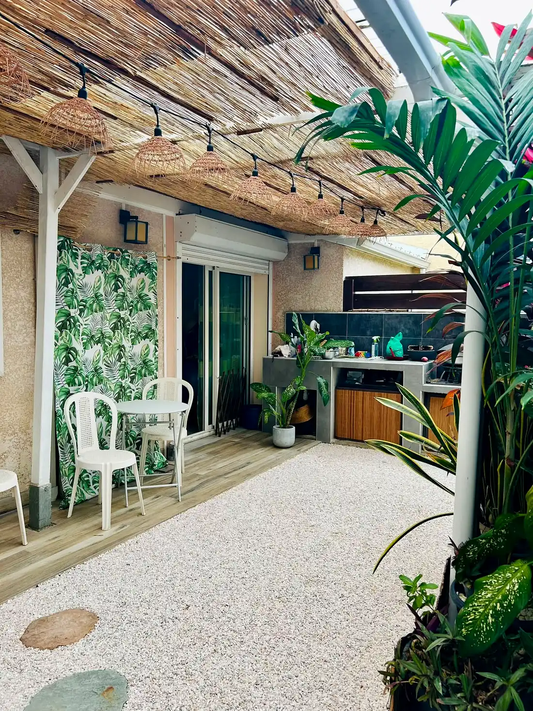
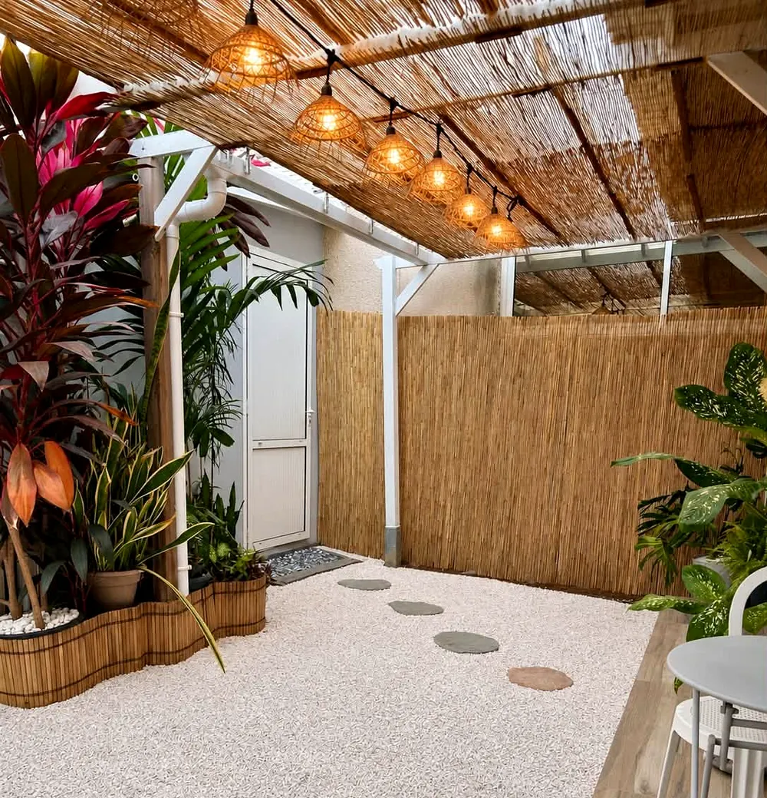
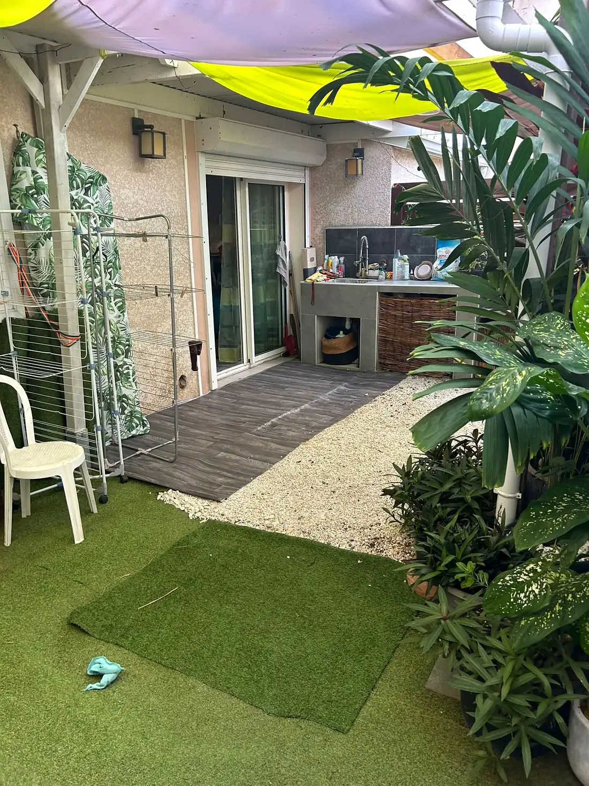
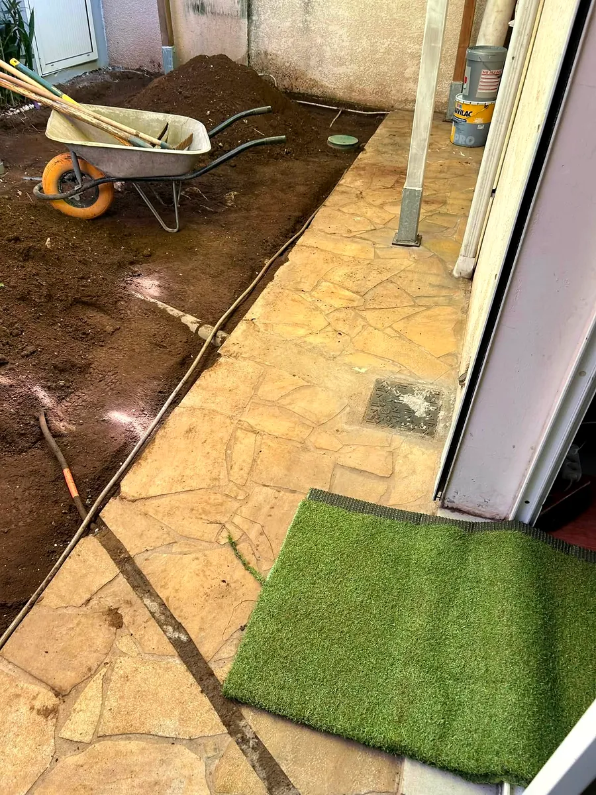
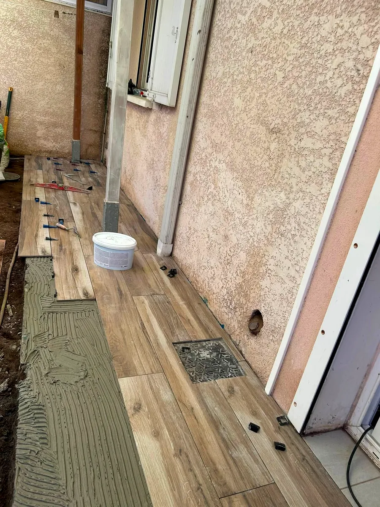
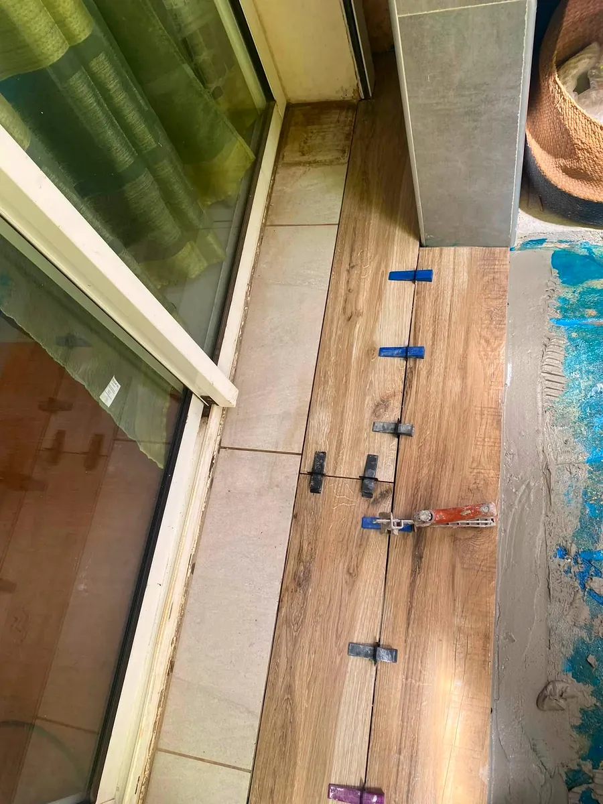
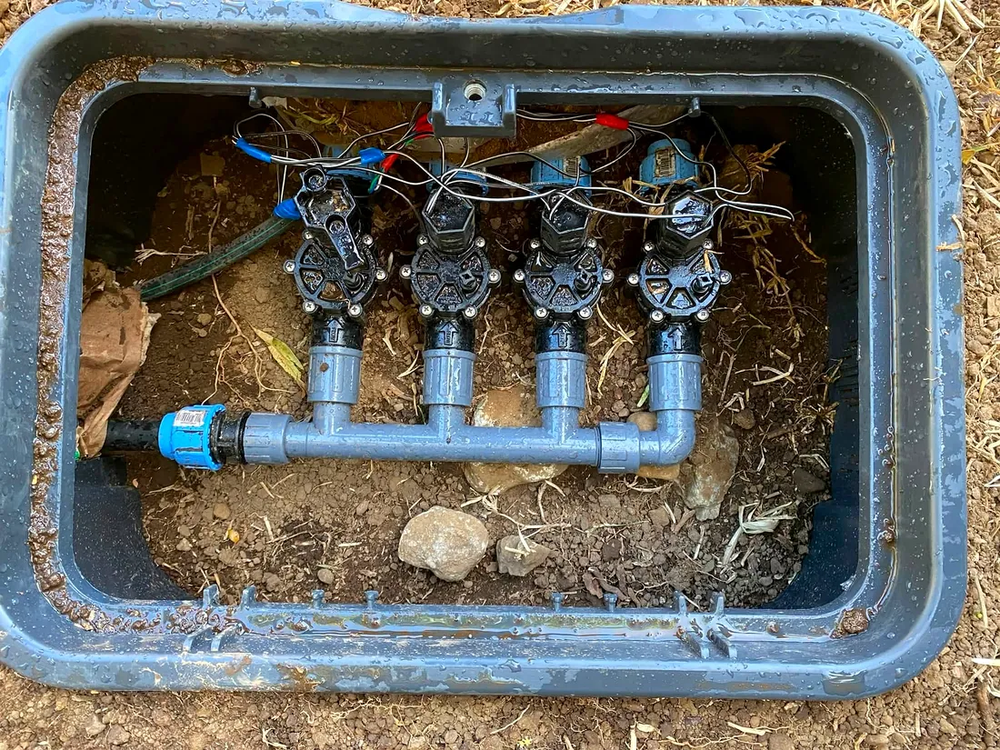
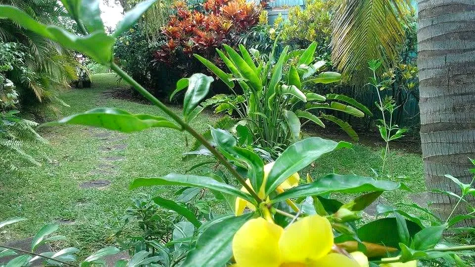

Végétalisation
Des plantes choisies pour s'épanouir sous le climat réunionnais, du massif à la bordure tropicale.

Aménagement paysager · La Possession · depuis 2009
Aménagement paysager, entretien de parc et jardin, sur toute l'île. Végétalisation, arrosage automatique, récupération d'eau de pluie, terrasse, pergola, clôture et maçonnerie paysagère.
Dos d'Âne, La Possession · intervention sur toute l'île
La maison
Depuis 2009, Jardin Pays aménage et entretient parcs et jardins. Une société de service d'architecture paysagère installée à Dos d'Âne, sur les hauteurs de La Possession, qui intervient sur toute l'île.
Du coin de cour à transformer jusqu'au système d'arrosage complet : la même équipe conçoit, réalise et entretient, avec des végétaux adaptés et une eau bien gérée.
« Cultivons ensemble des espaces qui vous ressemblent. »


AvantAprèsFaites glisser pour voir la transformation
Fin de chantier
« Fin de chantier pour ce petit espace de jardin de 27 m² » : une cour du quotidien devenue une terrasse lumineuse où l'on a envie de s'attabler.
Savoir-faire
Des plantes choisies pour s'épanouir sous le climat réunionnais, du massif à la bordure tropicale.
Installation de systèmes d'arrosage et d'irrigation automatique : un jardin toujours bien hydraté.
Chaque averse devient une réserve pour le jardin : une eau gérée avec bon sens.
Des espaces à vivre dehors : terrasse, pergola pour l'ombre, clôture pour l'intimité.
Dalles, bordures et aménagements maçonnés, jusqu'à la dalle prête à recevoir un abri de jardin.
Un suivi régulier pour garder un extérieur net et verdoyant toute l'année.
Sur le terrain
Faites défiler les photos →





Travaux du côté de Mongaillard : installation d'un système d'arrosage automatique.
Une dalle de béton pour accueillir un abri : Jardin Pays accompagne aussi vos abris et mobilier de jardin.
Préparation du sol et pose de la terrasse, photos à l'appui.
Un petit espace de jardin entièrement transformé.
Nos engagements
Plantes locales et adaptées au climat réunionnais.
Solutions économes et responsables.
Favoriser la vie du sol et les écosystèmes naturels.
Des sols vivants et préservés.
Des choix durables pour aujourd'hui et demain.
Cultivons ensemble des espaces qui vous ressemblent
Zone d'intervention
Les chantiers récents de Jardin Pays passent par La Possession, Saint-Denis et Saint-Paul. Où que soit votre jardin, l'équipe se déplace.
Demander un passagePour Noël
Le repas de Noël sous la pergola, l'apéritif au jardin en famille : offrez-vous un extérieur remis en beauté pour la fin d'année, ou faites ce cadeau à quelqu'un que vous aimez.
Entretien du jardin, tailles et massifs nets pour accueillir vos invités.
Terrasse, pergola, galets : le petit espace qui change tout pour les soirées d'été.
Offrir à vos parents ou à un proche une remise en beauté de leur jardin.
Contact
Un message, une photo de votre extérieur, et le projet démarre.
Aménagement, arrosage, terrasse ou entretien régulier : écrivez directement à Jardin Pays.